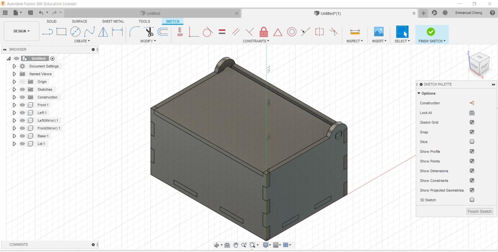
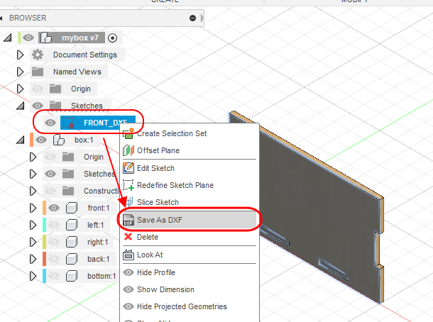
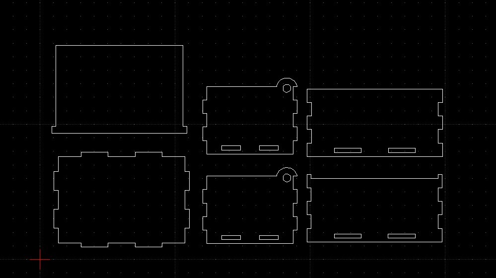
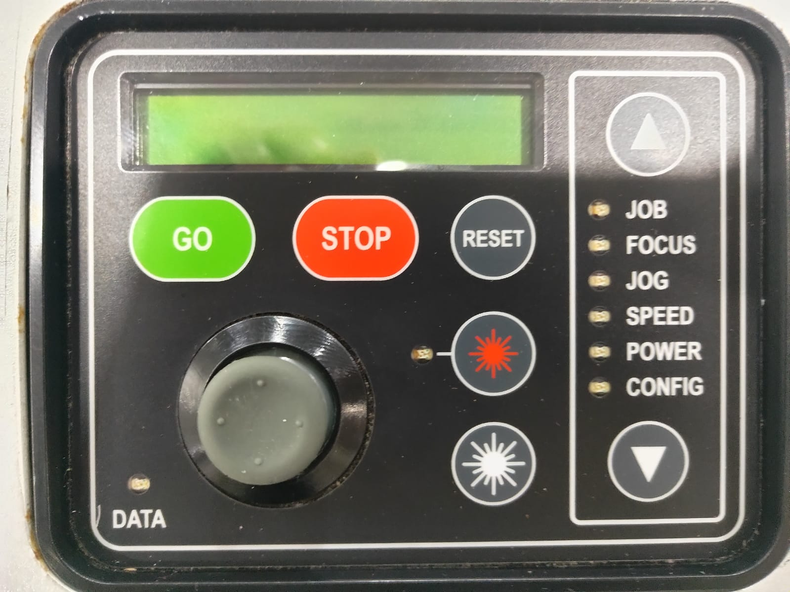

Introduction
Laser cutting is a process where material is placed on a horizontal plane and a laser is moved across the material to cut it. This laser can be focussed onto a tight spot which allows the beam to make a thin cut which is very precise. There are several parameters that a laser cutter can have depending on the material that is being cut etc.
- Speed: The speed at which the laser moves determines the surface and depth of the cut, lower speed will result in a deeper cut and cause charring of the material.
- Intensity:The intensity of the laser determines the depth of cut, higher intensity will result in a deeper cut. Denser material requires higher intensity..
- Number of Pulses:Most laser are pulsed. The higher the number of pulses per second give higher intensities and prolonged exposure to the laser. Denser material requires higher frequency of pulses.
Most lasers settings come with recommendations from the manufacturer or the Technicians and are dependent upont the material (e.g. wood, acrylic, paper), the thickness and the color/coloration of the material. Some materials cannot be cut by laser cutting because they release poisonous gas when cut.
In CAD, we visualise our work in a 3D model, however, in order to laser cut our design, we need to lay out the design in a 2D form. We also have to take into consideration when designing the 3D model to allow it to be constructed from a 2D state after laser cutting into a 3D model. The preferred file formats required for laser cutting are: AutoCAD DXF (Data eXchange Format), PDF (Portable Document Format) and SVG (Scalable Vector Graphics). Laser cutting can used both Vectors and Rasters and each of them come with their own advantages.
Vector: Comprised of mathematical equations for lines which makes them crisp and sharp. Used for cutting
Raster: Comprised of coloured pixels, which mainatains gradient much better than Vectors. Used for engraving
We will be using CorelDraw Graphics suite to check and finalise the cuts. You can also use Open Source software to import, check and layout your DXF files before doing a final import to CorelDraw such as LibreCAD.
- Firstly, to create a 2D DXF file, create a new sketch of surface that you want to laser cut in Fusion 360, and click finish sketch. Do this for all the different parts of the product that you want to laser cut. You can then right click the sketch in the Broswer, and save the sketch as a different file format to laser cut.  
- In LibreCAD, open a new drawing File > New. Use File > Import > Block and select your DXF file. Keep adding the different profiles that you need to cut.
- Layout your laser cut profile using LibreCAD close to each other so that you can reuse as much material as possible and reduce travel time to reduce the time needed to finish cutting. Remember that any line/graphic drawn will be cut out by the laser cutter. 
- Check your profiles, save your work as another DXF file e.g. layout.dxf.
- You can do a single import into CorelDraw in the FabLab. Create a new CorelDraw file using the default template.
- File > Import > Select LibreCAD DXF file. Ensure that the units are Metric and the Scaling is 1:1. Select the lines that are meant to be cut as "Hairline".
- Click print once you are ready to do so, and click "Configure" to set the Power, Speed and frequency for Vector and Raster seperately.
- On the laser cutter, use the arrow keys to select the different functions
- Job: Select the job to start cutting. Press GO to start
- Jog: Move the cutter using the joystick. Press the joystick to set the position as the starting point.
- Config: Move the cutter to the top-left hand most corner.
